Unit Circle: Sine and Cosine Functions
Looking for a thrill? Then consider a ride on the Ain Dubai, the world's tallest Ferris wheel. Located in Dubai, the most populous city and the financial and tourism hub of the United Arab Emirates, the wheel soars to 820 feet, about 1.5 tenths of a mile. Described as an observation wheel, riders enjoy spectacular views of the Burj Khalifa (the world's tallest building) and the Palm Jumeirah (a human-made archipelago home to over 10,000 people and 20 resorts) as they travel from the ground to the peak and down again in a repeating pattern. In this section, we will examine this type of revolving motion around a circle. To do so, we need to define the type of circle first, and then place that circle on a coordinate system. Then we can discuss circular motion in terms of the coordinate pairs.
Finding Function Values for the Sine and Cosine
To define our trigonometric functions, we begin by drawing a unit circle, a circle centered at the origin with radius 1, as shown in Figure 2. The angle (in radians) that intercepts forms an arc of length Using the formula and knowing that we see that for a unit circle,
Recall that the x- and y-axes divide the coordinate plane into four quarters called quadrants. We label these quadrants to mimic the direction a positive angle would sweep. The four quadrants are labeled I, II, III, and IV.
For any angle we can label the intersection of the terminal side and the unit circle as by its coordinates, The coordinates and will be the outputs of the trigonometric functions and respectively. This means and
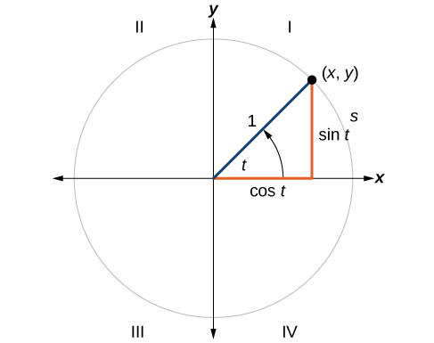
Defining Sine and Cosine Functions
Now that we have our unit circle labeled, we can learn how the coordinates relate to the arc length and angle. The sine function relates a real number to the y-coordinate of the point where the corresponding angle intercepts the unit circle. More precisely, the sine of an angle equals the y-value of the endpoint on the unit circle of an arc of length In Figure 2, the sine is equal to Like all functions, the sine function has an input and an output. Its input is the measure of the angle; its output is the y-coordinate of the corresponding point on the unit circle.
The cosine function of an angle equals the x-value of the endpoint on the unit circle of an arc of length In Figure 3, the cosine is equal to
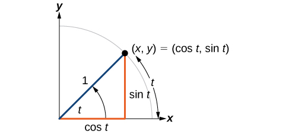
Because it is understood that sine and cosine are functions, we do not always need to write them with parentheses: is the same as and is the same as Likewise, is a commonly used shorthand notation for Be aware that many calculators and computers do not recognize the shorthand notation. When in doubt, use the extra parentheses when entering calculations into a calculator or computer.
Finding Function Values for Sine and Cosine
Point is a point on the unit circle corresponding to an angle of as shown in Figure 4. Find and
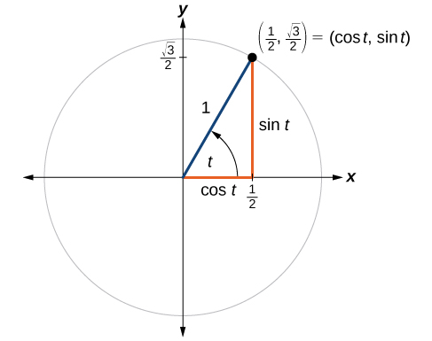
Solution
We know that is the x-coordinate of the corresponding point on the unit circle and is the y-coordinate of the corresponding point on the unit circle. So:
Finding Sines and Cosines of Angles on an Axis
For quadrantral angles, the corresponding point on the unit circle falls on the x- or y-axis. In that case, we can easily calculate cosine and sine from the values of and
Calculating Sines and Cosines along an Axis
Find and
Solution
Moving counterclockwise around the unit circle from the positive x-axis brings us to the top of the circle, where the coordinates are (0, 1), as shown in Figure 6.
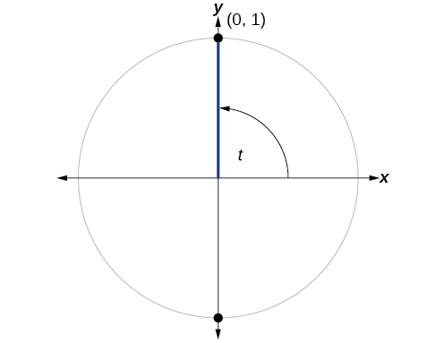
Using our definitions of cosine and sine,
The cosine of 90° is 0; the sine of 90° is 1.
The Pythagorean Identity
Now that we can define sine and cosine, we will learn how they relate to each other and the unit circle. Recall that the equation for the unit circle is Because and we can substitute for and to get This equation, is known as the Pythagorean Identity. See Figure 7.
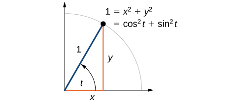
We can use the Pythagorean Identity to find the cosine of an angle if we know the sine, or vice versa. However, because the equation yields two solutions, we need additional knowledge of the angle to choose the solution with the correct sign. If we know the quadrant where the angle is, we can easily choose the correct solution.
Finding a Cosine from a Sine or a Sine from a Cosine
If and is in the second quadrant, find
Solution
If we drop a vertical line from the point on the unit circle corresponding to we create a right triangle, from which we can see that the Pythagorean Identity is simply one case of the Pythagorean Theorem. See Figure 8.
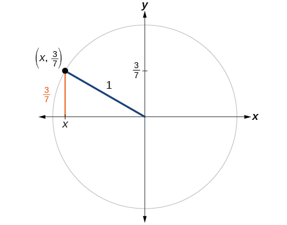
Substituting the known value for sine into the Pythagorean Identity,
Because the angle is in the second quadrant, we know the x-value is a negative real number, so the cosine is also negative. So
Finding Sines and Cosines of Special Angles
We have already learned some properties of the special angles, such as the conversion from radians to degrees. We can also calculate sines and cosines of the special angles using the Pythagorean Identity and our knowledge of triangles.
Finding Sines and Cosines of 45° Angles
First, we will look at angles of or as shown in Figure 9 . A triangle is an isosceles triangle, so the x- and y-coordinates of the corresponding point on the circle are the same. Because the x- and y-values are the same, the sine and cosine values will also be equal.
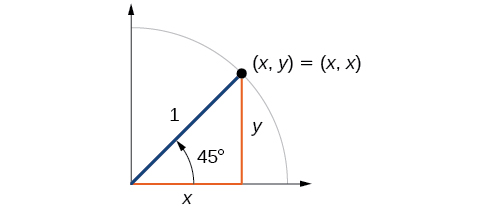
At , which is 45 degrees, the radius of the unit circle bisects the first quadrantal angle. This means the radius lies along the line A unit circle has a radius equal to 1. So, the right triangle formed below the line has sides and and a radius = 1. See Figure 10.
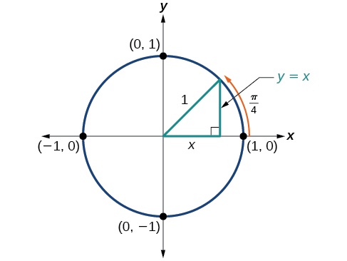
From the Pythagorean Theorem we get
Substituting we get
Combining like terms we get
And solving for we get
In quadrant I,
At or 45 degrees,
If we then rationalize the denominators, we get
Therefore, the coordinates of a point on a circle of radius at an angle of are
Finding Sines and Cosines of 30° and 60° Angles
Next, we will find the cosine and sine at an angle of or . First, we will draw a triangle inside a circle with one side at an angle of and another at an angle of as shown in Figure 11. If the resulting two right triangles are combined into one large triangle, notice that all three angles of this larger triangle will be as shown in Figure 12.
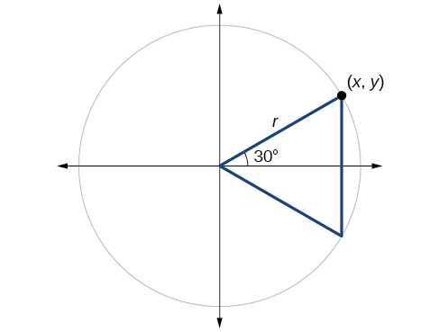
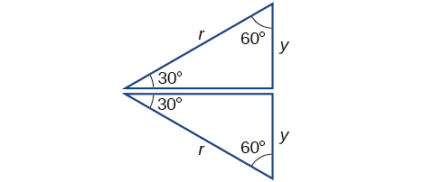
Because all the angles are equal, the sides are also equal. The vertical line has length and since the sides are all equal, we can also conclude that or Since ,
And since in our unit circle,
Using the Pythagorean Identity, we can find the cosine value.
The coordinates for the point on a circle of radius at an angle of are At (60°), the radius of the unit circle, 1, serves as the hypotenuse of a 30-60-90 degree right triangle, as shown in Figure 13. Angle has measure At point we draw an angle with measure of We know the angles in a triangle sum to so the measure of angle is also Now we have an equilateral triangle. Because each side of the equilateral triangle is the same length, and we know one side is the radius of the unit circle, all sides must be of length 1.
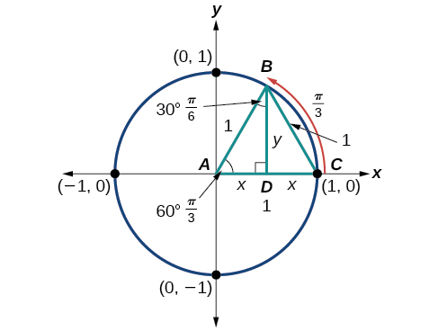
The measure of angle is 30°. So, if double, angle is 60°. is the perpendicular bisector of so it cuts in half. This means that is the radius, or Notice that is the x-coordinate of point which is at the intersection of the 60° angle and the unit circle. This gives us a triangle with hypotenuse of 1 and side of length
From the Pythagorean Theorem, we get
Substituting we get
Solving for we get
Since has the terminal side in quadrant I where the y-coordinate is positive, we choose the positive value.
At (60°), the coordinates for the point on a circle of radius at an angle of are so we can find the sine and cosine.
We have now found the cosine and sine values for all of the most commonly encountered angles in the first quadrant of the unit circle. Table 1 summarizes these values.
| Angle | 0 | or 30 | or 45° | or 60° | or 90° |
| Cosine | 1 | 0 | |||
| Sine | 0 | 1 |
Figure 14 shows the common angles in the first quadrant of the unit circle.
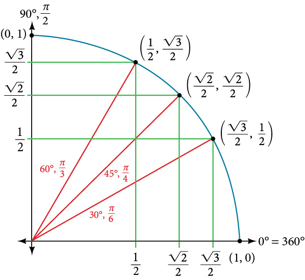
Using a Calculator to Find Sine and Cosine
To find the cosine and sine of angles other than the special angles, we turn to a computer or calculator. Be aware: Most calculators can be set into “degree” or “radian” mode, which tells the calculator the units for the input value. When we evaluate on our calculator, it will evaluate it as the cosine of 30 degrees if the calculator is in degree mode, or the cosine of 30 radians if the calculator is in radian mode.
Using a Graphing Calculator to Find Sine and Cosine
Evaluate using a graphing calculator or computer.
Solution
Enter the following keystrokes:
COS ENTER
Identifying the Domain and Range of Sine and Cosine Functions
Now that we can find the sine and cosine of an angle, we need to discuss their domains and ranges. What are the domains of the sine and cosine functions? That is, what are the smallest and largest numbers that can be inputs of the functions? Because angles smaller than 0 and angles larger than can still be graphed on the unit circle and have real values of and there is no lower or upper limit to the angles that can be inputs to the sine and cosine functions. The input to the sine and cosine functions is the rotation from the positive x-axis, and that may be any real number.
What are the ranges of the sine and cosine functions? What are the least and greatest possible values for their output? We can see the answers by examining the unit circle, as shown in Figure 15. The bounds of the x-coordinate are The bounds of the y-coordinate are also Therefore, the range of both the sine and cosine functions is
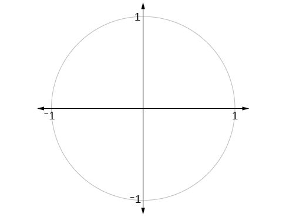
Finding Reference Angles
We have discussed finding the sine and cosine for angles in the first quadrant, but what if our angle is in another quadrant? For any given angle in the first quadrant, there is an angle in the second quadrant with the same sine value. Because the sine value is the y-coordinate on the unit circle, the other angle with the same sine will share the same y-value, but have the opposite x-value. Therefore, its cosine value will be the opposite of the first angle’s cosine value.
Likewise, there will be an angle in the fourth quadrant with the same cosine as the original angle. The angle with the same cosine will share the same x-value but will have the opposite y-value. Therefore, its sine value will be the opposite of the original angle’s sine value.
As shown in Figure 16, angle has the same sine value as angle the cosine values are opposites. Angle has the same cosine value as angle the sine values are opposites.
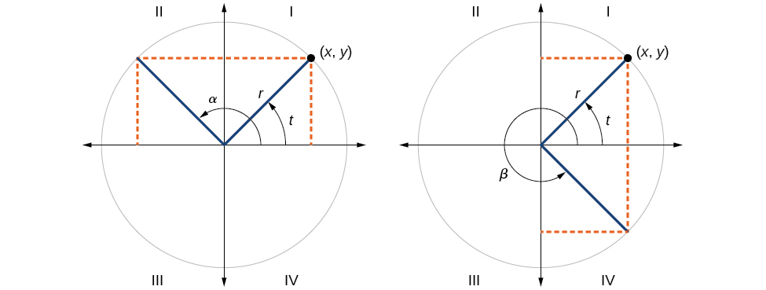
Recall that an angle’s reference angle is the acute angle, formed by the terminal side of the angle and the horizontal axis. A reference angle is always an angle between and or and radians. As we can see from Figure 17, for any angle in quadrants II, III, or IV, there is a reference angle in quadrant I.
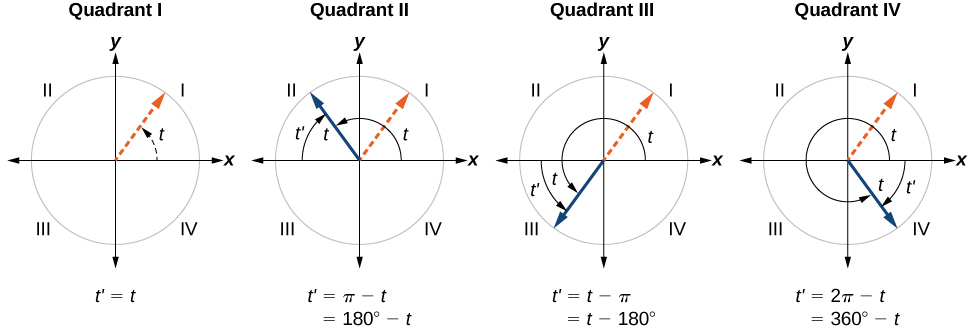
Finding a Reference Angle
Find the reference angle of as shown in Figure 18.
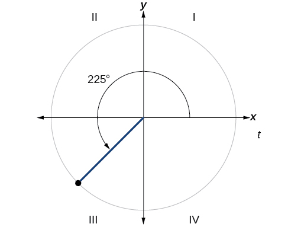
Solution
Because is in the third quadrant, the reference angle is
Using Reference Angles
Now let’s take a moment to reconsider the Ferris wheel introduced at the beginning of this section. Suppose a rider snaps a photograph while stopped twenty feet above ground level. The rider then rotates three-quarters of the way around the circle. What is the rider’s new elevation? To answer questions such as this one, we need to evaluate the sine or cosine functions at angles that are greater than 90 degrees or at a negative angle. Reference angles make it possible to evaluate trigonometric functions for angles outside the first quadrant. They can also be used to find coordinates for those angles. We will use the reference angle of the angle of rotation combined with the quadrant in which the terminal side of the angle lies.
Using Reference Angles to Evaluate Trigonometric Functions
We can find the cosine and sine of any angle in any quadrant if we know the cosine or sine of its reference angle. The absolute values of the cosine and sine of an angle are the same as those of the reference angle. The sign depends on the quadrant of the original angle. The cosine will be positive or negative depending on the sign of the x-values in that quadrant. The sine will be positive or negative depending on the sign of the y-values in that quadrant.
Using Reference Angles to Find Sine and Cosine
- ⓐ Using a reference angle, find the exact value of and
- ⓑ Using the reference angle, find and
Solution
- ⓐ 150° is located in the second quadrant. The angle it makes with the x-axis is 180° − 150° = 30°, so the reference angle is 30°.
This tells us that 150° has the same sine and cosine values as 30°, except for the sign. We know that
Since 150° is in the second quadrant, the x-coordinate of the point on the circle is negative, so the cosine value is negative. The y-coordinate is positive, so the sine value is positive.
- ⓑ is in the third quadrant. Its reference angle is The cosine and sine of are both In the third quadrant, both and are negative, so:
Using Reference Angles to Find Coordinates
Now that we have learned how to find the cosine and sine values for special angles in the first quadrant, we can use symmetry and reference angles to fill in cosine and sine values for the rest of the special angles on the unit circle. They are shown in Figure 19. Take time to learn the coordinates of all of the major angles in the first quadrant.
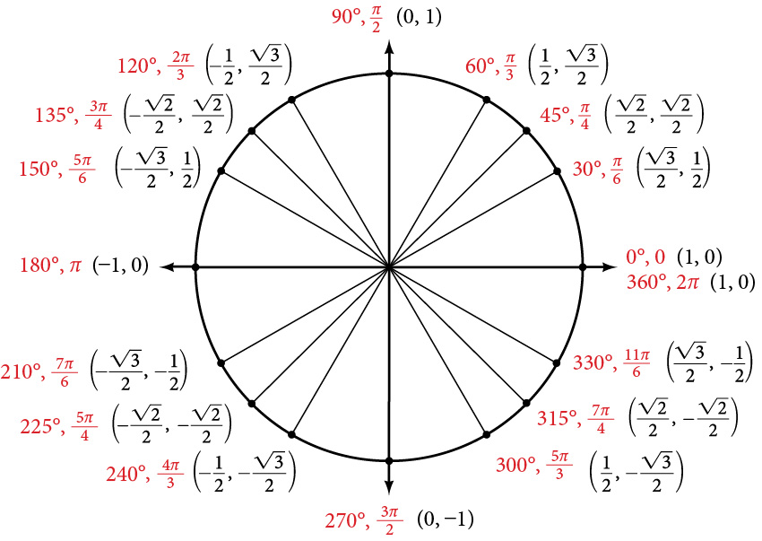
In addition to learning the values for special angles, we can use reference angles to find coordinates of any point on the unit circle, using what we know of reference angles along with the identities
First we find the reference angle corresponding to the given angle. Then we take the sine and cosine values of the reference angle, and give them the signs corresponding to the y- and x-values of the quadrant.
Using the Unit Circle to Find Coordinates
Find the coordinates of the point on the unit circle at an angle of
Solution
We know that the angle is in the third quadrant.
First, let’s find the reference angle by measuring the angle to the x-axis. To find the reference angle of an angle whose terminal side is in quadrant III, we find the difference of the angle and
Next, we will find the cosine and sine of the reference angle:
We must determine the appropriate signs for x and y in the given quadrant. Because our original angle is in the third quadrant, where both and are negative, both cosine and sine are negative.
Now we can calculate the coordinates using the identities and
The coordinates of the point are on the unit circle.
Key Equations
| Cosine | |
| Sine | |
| Pythagorean Identity |
Key Concepts
- Finding the function values for the sine and cosine begins with drawing a unit circle, which is centered at the origin and has a radius of 1 unit.
- Using the unit circle, the sine of an angle equals the y-value of the endpoint on the unit circle of an arc of length whereas the cosine of an angle equals the x-value of the endpoint. See Example 1.
- The sine and cosine values are most directly determined when the corresponding point on the unit circle falls on an axis. See Example 2.
- When the sine or cosine is known, we can use the Pythagorean Identity to find the other. The Pythagorean Identity is also useful for determining the sines and cosines of special angles. See Example 3.
- Calculators and graphing software are helpful for finding sines and cosines if the proper procedure for entering information is known. See Example 4.
- The domain of the sine and cosine functions is all real numbers.
- The range of both the sine and cosine functions is
- The sine and cosine of an angle have the same absolute value as the sine and cosine of its reference angle.
- The signs of the sine and cosine are determined from the x- and y-values in the quadrant of the original angle.
- An angle’s reference angle is the size angle, formed by the terminal side of the angle and the horizontal axis. See Example 5.
- Reference angles can be used to find the sine and cosine of the original angle. See Example 6.
- Reference angles can also be used to find the coordinates of a point on a circle. See Example 7.
Section Exercises
Verbal
Describe the unit circle.
Solution
The unit circle is a circle of radius 1 centered at the origin.
What do the x- and y-coordinates of the points on the unit circle represent?
Discuss the difference between a coterminal angle and a reference angle.
Solution
Coterminal angles are angles that share the same terminal side. A reference angle is the size of the smallest acute angle, formed by the terminal side of the angle and the horizontal axis.
Explain how the cosine of an angle in the second quadrant differs from the cosine of its reference angle in the unit circle.
Explain how the sine of an angle in the second quadrant differs from the sine of its reference angle in the unit circle.
Solution
The sine values are equal.
Algebraic
For the following exercises, use the given sign of the sine and cosine functions to find the quadrant in which the terminal point determined by lies.
and
and
Solution
I
and
and
Solution
IV
For the following exercises, find the exact value of each trigonometric function.
Solution
Solution
Solution
Solution
0
Solution
−1
Solution
Numeric
For the following exercises, state the reference angle for the given angle.
Solution
Solution
Solution
Solution
Solution
Solution
For the following exercises, find the reference angle, the quadrant of the terminal side, and the sine and cosine of each angle. If the angle is not one of the special angles on the unit circle, use a calculator and round to three decimal places.
Solution
Quadrant IV,
Solution
Quadrant II,
Solution
Quadrant II,
Solution
Quadrant II,
Solution
Quadrant III,
Solution
Quadrant II,
Solution
Quadrant II,
Solution
Quadrant IV,
For the following exercises, find the requested value.
If and is in the 4th quadrant, find
If and is in the 1st quadrant, find
Solution
If and is in the 2nd quadrant, find
If and is in the 3rd quadrant, find
Solution
Find the coordinates of the point on a circle with radius 15 corresponding to an angle of
Find the coordinates of the point on a circle with radius 20 corresponding to an angle of
Solution
Find the coordinates of the point on a circle with radius 8 corresponding to an angle of
Find the coordinates of the point on a circle with radius 16 corresponding to an angle of
Solution
State the domain of the sine and cosine functions.
State the range of the sine and cosine functions.
Solution
Graphical
For the following exercises, use the given point on the unit circle to find the value of the sine and cosine of
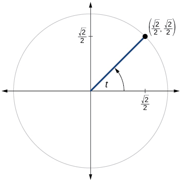
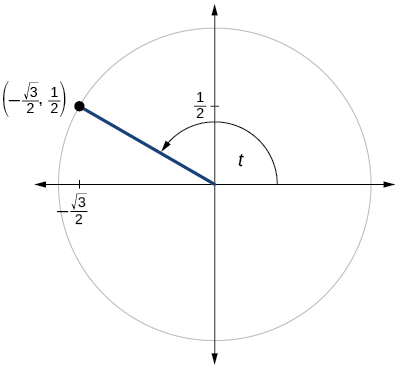
Solution
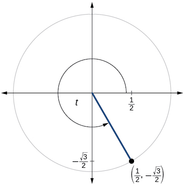
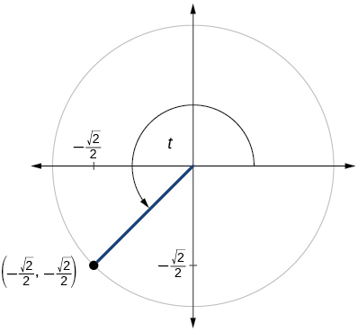
Solution
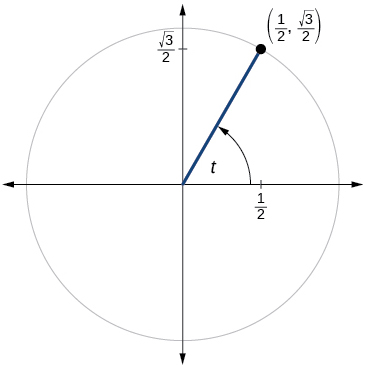
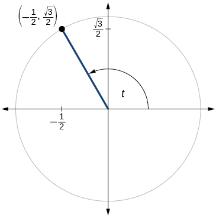
Solution
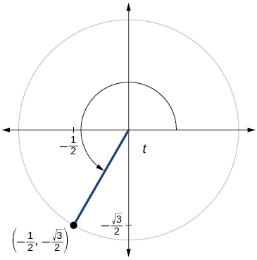
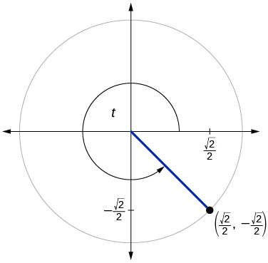
Solution
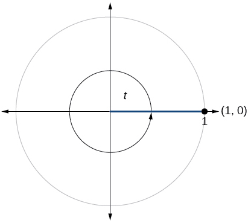
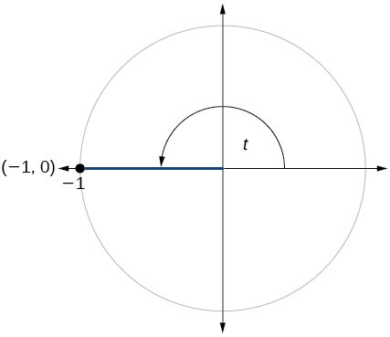
Solution
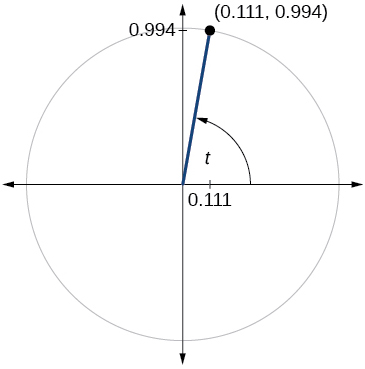
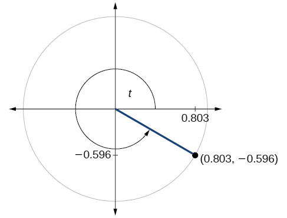
Solution
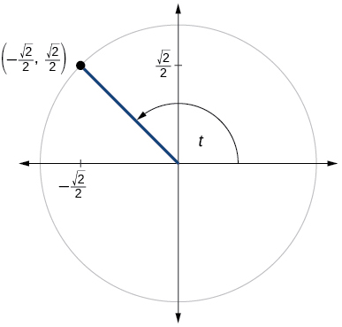
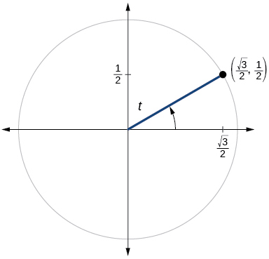
Solution
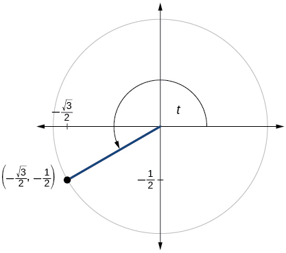
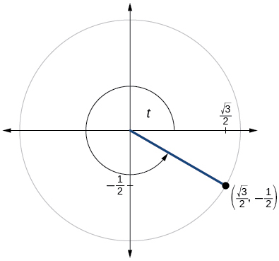
Solution
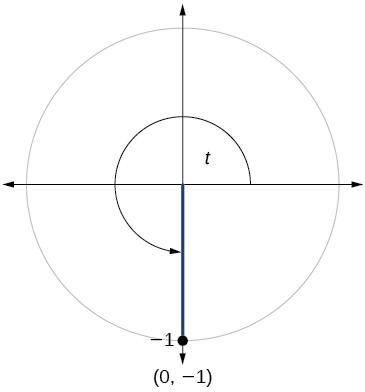
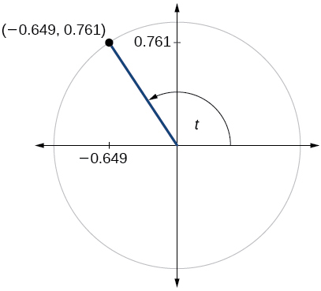
Solution
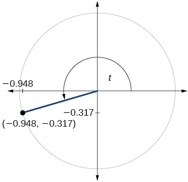
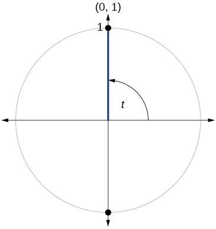
Solution
Technology
For the following exercises, use a graphing calculator to evaluate.
Solution
−0.1736
Solution
0.9511
Solution
−0.7071
Solution
−0.1392
Solution
−0.7660
Extensions
For the following exercises, evaluate.
Solution
Solution
Solution
Solution
Solution
0
Real-World Applications
For the following exercises, use this scenario: A child enters a carousel that takes one minute to revolve once around. The child enters at the point that is, on the due north position. Assume the carousel revolves counter clockwise.
What are the coordinates of the child after 45 seconds?
What are the coordinates of the child after 90 seconds?
Solution
What is the coordinates of the child after 125 seconds?
When will the child have coordinates if the ride lasts 6 minutes? (There are multiple answers.)
Solution
37.5 seconds, 97.5 seconds, 157.5 seconds, 217.5 seconds, 277.5 seconds, 337.5 seconds
When will the child have coordinates if the ride last 6 minutes?
Analysis
We can find the cosine or sine of an angle in degrees directly on a calculator with degree mode. For calculators or software that use only radian mode, we can find the sine of for example, by including the conversion factor to radians as part of the input:
SIN ENTER